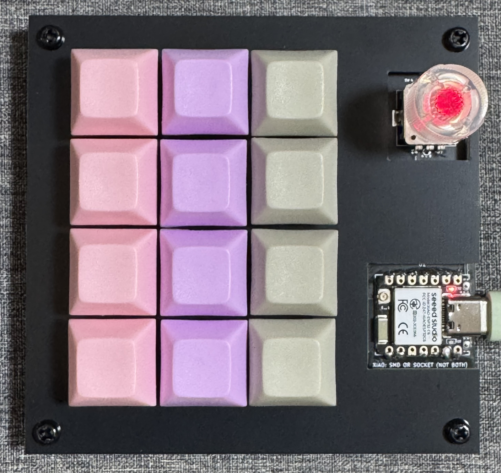

Wi-Fi / OSC
VRChat・OSC対応アプリを操作する
ChainOSCPad
キーとエンコーダーからOSCメッセージを直接送信。アドレスや値、シーケンスをブラウザーで設定できます。
- Wi-Fi経由でOSCを送信
- Press / Release・Sequenceに対応
- 設定のJSONバックアップ・Preset対応
設定方法デバイスのWi-Fi Web UI
ONE HARDWARE / THREE PERSONALITIES
12個のキーと、ひとつのエンコーダー。
仮想空間の操作も、いつものショートカットも、音楽も。
ファームウェアを選んで、あなたのコントローラーに。
XIAO ESP32S3 / C3 / C6 / C5 · 共通のChainOSCPadハードウェア

12 KEYS
1 ROTARY ENCODER
4 XIAO VARIANTS
配線はそのまま、役割を変える。01 / CHOOSE YOUR ROLE
使いたい機能から選ぶだけ。
各プロジェクトの公開ページへ進めます。
VRChat・OSC対応アプリを操作する
キーとエンコーダーからOSCメッセージを直接送信。アドレスや値、シーケンスをブラウザーで設定できます。
ショートカット・音量操作に使う
よく使うキーや修飾キーの組み合わせを手元に。エンコーダーで音量調整やメディア操作も行えます。
音源を演奏・MIDIでコントロールする
12キーを半音階の鍵盤に。MIDI対応の音源やDAWへノートとControl Changeを送信します。
それぞれ独立したファームウェアです。1台には、使いたい用途のファームウェアを書き込んで使用します。
02 / CONNECTION GUIDE
USBでの書き込みと、
操作データの送信方法は別です。
| XIAOボード | OSC | Keyboard | MIDI |
|---|---|---|---|
| ESP32S3 | Wi-Fi | USB HID または BLE HID ※1 | USB MIDI ＋ BLE-MIDI |
| ESP32C3 | Wi-Fi | BLE HID | BLE-MIDI |
| ESP32C6 | Wi-Fi | BLE HID | BLE-MIDI |
| ESP32C5 | Wi-Fi | BLE HID | BLE-MIDI |
※1 KeyboardのS3版：USB版とBLE版は別ファームウェアです。Web Installerで接続方式を選択してください。
C3 / C6 / C5のUSB：書き込み・設定・シリアル通信に使用します。USB HIDやUSB MIDIによる操作データの送信には対応しません。
ブラウザーからの書き込み・設定：PC版Chrome / Edgeと、データ通信対応USBケーブルを使用してください。BLE版KeyboardもConfiguratorへの接続はUSBです。
03 / SWITCH YOUR FIRMWARE
ハードウェアを組み替えず、
目的のファームウェアへ書き換えます。
OSCはWeb UI、KeyboardはConfiguratorから必要な設定を保存します。MIDIで設定ヘッダーを変更した場合は、変更したソースを保管してください。設定形式は各ファームウェアで異なります。
BLE KeyboardとBLE-MIDIなど用途を切り替える場合は、接続先PC・スマートフォンのBluetooth設定から旧デバイスを削除します。同じ用途の通常更新では、毎回削除する必要はありません。
使いたいファームウェアのWeb Installerを開き、搭載しているXIAOと、必要に応じて接続方式を選択します。既存ファームウェアは置き換わります。消去を選んだ場合は保存済み設定も失われます。
書き込み後はRESETし、Wi-Fi設定またはBluetoothの再ペアリングを行います。DAWなどで入力を選択し、キー・回転・押し込みの動作を確認してください。
04 / SHARED HARDWARE
4行×3列のキーマトリクス、押し込み付きロータリーエンコーダー、ステータスLED。3つのファームウェアは同じChainOSCPadの基本配線を使用します。
配線の詳細をGitHubで確認同じXIAOの論理ピン名でも、S3 / C3 / C6 / C5でGPIO番号は異なります。組み立て時はボード別の配線表を確認してください。
| ピン | 接続先 |
|---|---|
| D0–D3 | ROW0–ROW3 |
| D4–D6 | COL0–COL2 |
| D7 / D8 | Encoder A / B |
| D9 | Encoder Push |
| D10 | Status LED |
キーのダイオード方向はCOL →| ROW。帯側がROWです。エンコーダー共通端子とPushの反対側はGNDへ接続し、LEDには直列抵抗を使用します。
BEFORE YOU START
現在は用途別の独立したファームウェアです。1台に書き込んだファームウェアの機能を使用します。MIDIのS3版におけるUSB MIDIとBLE-MIDIの併用は、MIDIファームウェア内の機能です。
OSやアプリによって、BLE-MIDI対応ドライバーや専用の接続操作が必要です。KeyboardのBLE HIDとは認識方法が異なります。詳細はMIDIの接続ガイドを確認してください。
データ通信対応ケーブルとPC版Chrome / Edgeを使用し、Configuratorやシリアルモニターを閉じてください。必要に応じてXIAOのBOOTを押しながらUSBを接続し、BOOTを離してダウンロードモードにしてから書き込みます。完了後はRESETしてください。
OSCのアドレス設定、Keyboardのキー割り当て、MIDIのノート割り当ては別形式です。相互にそのまま読み込むことはできません。用途ごとにバックアップを保管し、対応するファームウェアで復元・再設定してください。
ChainOSCシリーズは、さまざまなハードウェアやWindowsアプリからOSCを送るプロジェクト群です。このポータルはChainOSCPadのハードウェアを軸に、OSC・Keyboard・MIDIの使い方をまとめています。ChainOSCシリーズを見る
各プロジェクトのGitHubと公開ページを確認してください。バージョンと更新タイミングはプロジェクトごとに異なります。不具合の報告時は、ファームウェア名、XIAOの種類、USB／Bluetoothなどの接続方式、OSと再現手順を添えると調査しやすくなります。